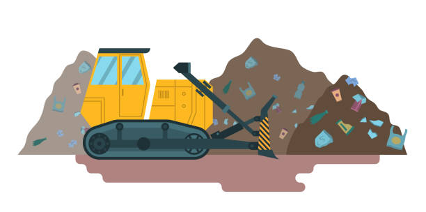
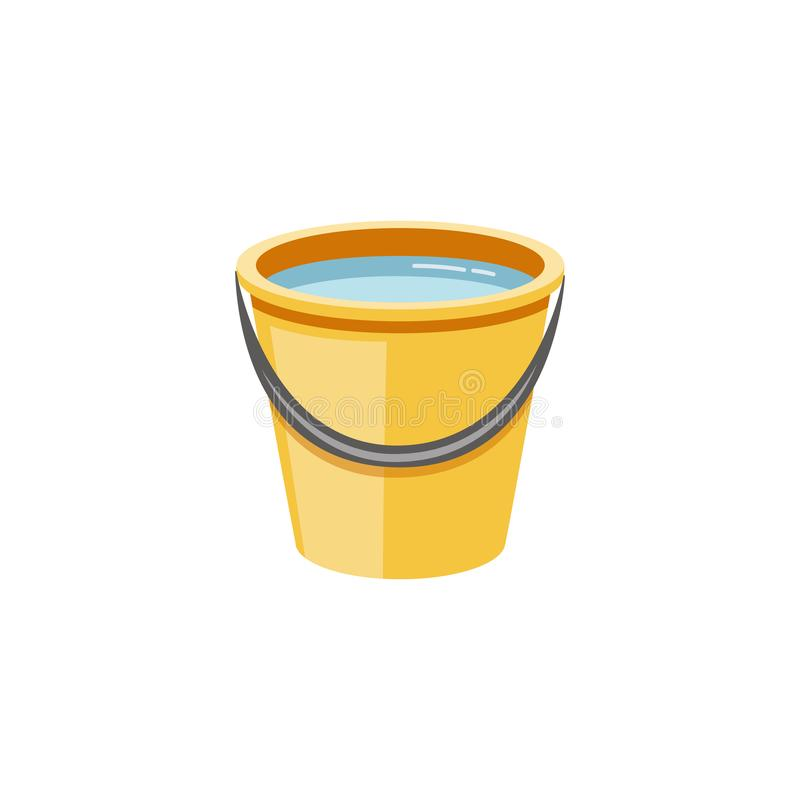
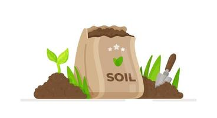

Composting is a simple way of turning non-usuable material into usable material.
Composting hel[s divert materials from going to landfills, minimizing the amount of greenhouse gases emissions released into the atmosphere and increasing the capacity of landfills.
Compost helps strengthens soil's ability to retain water. This causes plants to not be watered as frequently.
erusion occurs when top soil is blown or washed away causing infertile topsoil. Compost can restore topsoil and build a stable soil structure.

Compost sufficiently supplies soil nutriens likephosphorus and nitrogen. This reduces the need for additional fertizlier because compost naturally provides the necessary nutriens for the soil.
Carbon is stored in the top 3 feet of soil and is released into the atmosphere when soil structure is poor. Applied compost helps improve the soil structure to combat against carbon.
You should compost because enriches soil and promotes healthy plant growth, plants grown in compost-rich soil tend to be more resilient to diseases, pests, and fungi.